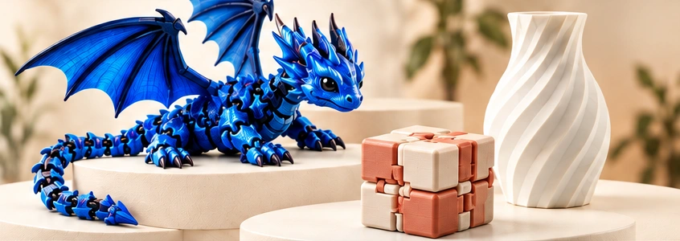

A sua ideia
Escolha uma criação ou descreva seu projeto.
CRIATIVIDADE EM CADA CAMADA
Peças únicas para brincar, decorar e surpreender.

Peças criativas, com detalhes e personalidade.
Tecnologia e materiais selecionados para melhores resultados.
Criações únicas para presentear e decorar momentos especiais.
Imagens ilustrativas · consulte os modelos, cores e medidas disponíveis.
Nenhuma criação encontrada. Tente outra busca.
ÚNICO COMO A SUA IDEIA
Uma lembrança com nome, uma peça decorativa ou um projeto que precisa sair do papel. Conte o que você tem em mente.
POR TRÁS DE CADA CAMADA
A JF Studio nasce para transformar ideias em objetos. Da escolha das cores aos últimos detalhes, cada projeto é pensado para ter a sua identidade.
Escolha uma criação ou descreva seu projeto.
Alinhamos medidas, cores, quantidade e orçamento.
O projeto ganha forma, uma camada de cada vez.